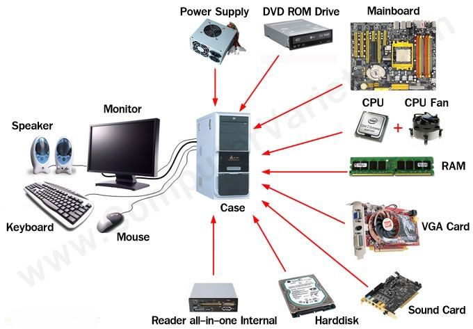

Definition: Computer hardware refers to the physical parts of a computer and related devices. Hardware includes the electrical, mechanical, data storage and magnetic components among other parts. Hardware can be divided into two sub categories; internal hardware and external hardware. Internal hardware is often referred as components and includes motherboards, hard drives and RAM. External hardware is often reffered as peripherals and includes monitors, keyboards and mice.
